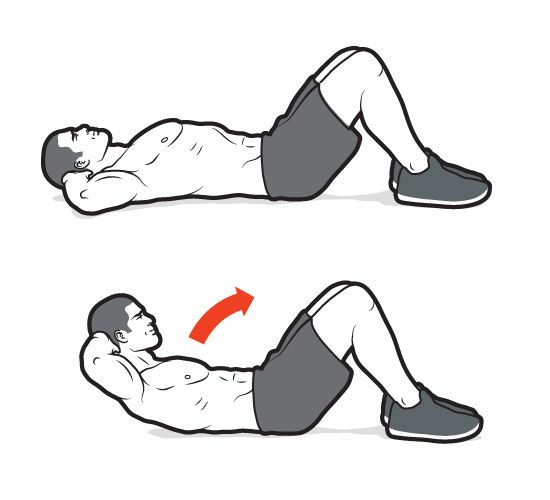
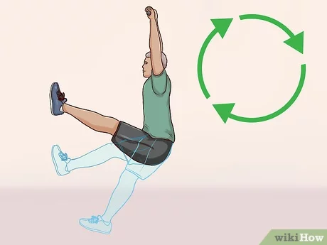

Crunch

1: Tư Thế Bắt Đầu
- Nằm ngửa trên sàn hoặc trên thảm tập.
- Co đầu gối, bàn chân đặt chắc chắn trên sàn nhà và cách nhau bằng mông.
- Đặt hai tay sau đầu hoặc nhẹ nhàng chạm vào thái dương (không kéo cổ).
2: Thực hiện động tác
- Dùng cơ bụng để nâng phần thân trên của thân lên, cuộn tròn người về phía đầu
gối.
- Giữ phần lưng dưới cố định và chỉ nâng vai lên khỏi sàn.
- Khi nâng lên, hãy thở ra và tập trung vào siết chặt cơ bụng.
3: Trở về vị trí ban đầu
- Hai vai và đầu gối nhẹ nhàng, trở lại tư thế nằm ban đầu.
- Hít vào khi bạn hạ xuống.
4: Lặp lại động tác
- Thực hiện 15-20 lần mỗi set và khoảng 3-4 set tùy vào khả năng của bạn.
5: Lưu ý
- Tránh kéo cổ để tránh gây căng thẳng lên vùng cổ.
- Chuyển động chậm và có kiểm soát để đảm bảo cơ bụng hoạt động hiệu quả.
- Nếu muốn tăng độ khó, bạn có thể thực hiện các biến thể như "bicycle crunch",
"reverse crunch" hoặc "double crunch".
Hanging Leg Raise

1: Tư thế bắt đầu
- Bắt đầu bằng cách treo người trên thanh xà đơn, hai tay lắm chắc
thanh xà rộng
hơn vai một chút.
- Để cơ thể thư giãn, chân thẳng và hơi co gối để không tọa quá nhiều áp lực lên
lưng dưới.
2: Thực hiện động tác
- Siết cơ bụng và từ từ nâng chân thẳng lên, giữ cho chân càng thẳng
càng tốt.
- Nâng chân lên đến khi song song với mặt đất hoặc cao hơn nếu bạn có
thể, tạo
thành góc 90 độ với
thân trên.
- Trong quá trình nâng, tránh dùng lực của hông hoặc đẩy thân trên để
tạo đà, hãy
cố gắng để chỉ cơ
bụng hoạt động.
3: Giữ tư thế
- Giữ chân ở điểm cao nhất trong khoảng 1-2 giây để cảm nhận sự co lại
của cơ
bụng.
4: Hạ chân xuống
- Từ từ hạ chân xuống về vị trí ban đầu, kiểm soát chuyển động để cơ
bụng luôn
được kích hoạt.
- Tránh để chân để thả rơi nhanh, và không để chân chạm vào nhau khi
hạ xuống để
duy trì căng cơ.
5: Lặp lại động tác
- Lặp lại khoảng 10-15 lần mỗi set, thực hiện 3-4 set tùy vào sức khỏe
và thể
lực.
6: Lưu ý
- Kiểm soát chuyển động: Tránh sử dụng quán tính hoặc đung đưa cơ thể
để thực
hiện động tác.
- Bắt đầu từ dễ đến khó: Nếu bạn mới tập, có thể co gối thay vì giữ
chân thẳng,
giúp giảm áp lực lên cơ
bụng dưới.
- Tập trung vào cơ bụng: Giữ phần lưng dưới ổn định và tập trung vào
sự co cơ
bụng để đạt hiệu quả
tốt nhất.
Plank (cơ bản)
1: Tư thế bắt đầu
- Nằm úp người xuống thảm tập.
- Chống hai khuỷu tay xuống sàn, khuỷu tay nằm dưới vai, cẳng tay song song và hướng về phía
trước.
- Mũi chân chống xuống sàn, nâng cơ thể lên.
2: Tư thế cơ thể
- Cơ thể tạo thành một đường thẳng từ đầu đến gót chân.
- Siết chặt cơ bụng, cơ mông giữ cho người không bị võng hoặc cong lên.
3: Hít thở
- Hít vào bằng mũi, thở ra bằng miệng một cách đều đặn.
- Giữ tư thế plank càng lâu càng tốt (mới tập có thể bắt đầu từ 20-30 giây).